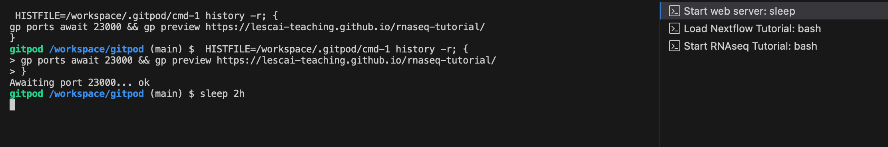

Differential Analysis with DESeq2¶
In this section of the tutorial, we will guide you through the practical steps necessary to set up the RStudio environment and perform a differential expression analysis using DESeq2. Building on the theoretical foundations established earlier, we will now focus on the hands-on implementation of the DESeq2 workflow. We will cover all the necessary steps to prepare your RStudio environment, load the required libraries and data, and execute the DESeq2 analysis. By the end of this section, you will have a fully functional DESeq2 analysis pipeline set up in RStudio, ready to uncover the differentially expressed genes in your dataset.
Launching the RStudio environment¶
Once the nf-core/rnaseq pipeline is terminated, the resulting data are stored in the folder results_star_salmon. No we can analyze the results by running DESeq2 on RStudio. First of all, we need to launch it:
A pop-up will appear and by clicking on Open, we will be redirected to the RStudio login page. By inserting the username and the password reported below, we will be able to connect to RStudio:
To prevent losing connection, go back to gitpod and type on the Terminal:
This command will keep the gitpod session active for exactly 2 hours, providing sufficient time to complete our analysis without interruption.

Now come back to our RStudio session.
Differential Expression Analysis¶
As in all analysis, firstly we need to create a new project:
1) Go to the File menu and select New Project;
2) Select New Directory, New Project, name the new directory /workspace/gitpod/training/DE_analysis/ and click on Create Project;
3) The new project will be automatically opened in RStudio
We can check whether we are in the correct working directory with getwd(). The path "/workspace/gitpod/training/DE_analysis/" should appear on your console. To store our results in an organized way, we will create a folder named de_results using the New Folder button in the bottom right panel. We will save all our resulting tables and plots in this folder. Next, go to the File menu, select New File, and then R Script to create a script editor in which we will save all commands required for the analysis. In the editor type:
and save the file as de_script.R. From now on, each command described in the tutorial can be added to your script. The resulting working directory should look like this:

The analysis requires several R packages. To utilize them, we need to load the following libraries:
#### Loading libraries ####
# tidyverse: a collection of R packages for data manipulation, visualization and modeling
library("tidyverse")
# DESeq2: package for differential gene expression analysis
library("DESeq2")
# pheatmap: a package for creating heatmaps, which will be used to visualize the results
install.packages("pheatmap") # To install the package missing in the current RStudio env
library("pheatmap")
# RColorBrewer: a package for creating color palettes, which will be used to customize the heatmaps
library("RColorBrewer")
# ggrepel: a package that provides a geom for ggplot2 to create repulsive text labels, which can be useful for avoiding overlapping labels in plots
library("ggrepel")
and the pre-computed DESeq2 object (dds) generated by the nfcore/rnaseq pipeline:
#### Import the dds obtained from nfcore/rnaseq ####
load("/workspace/gitpod/training/results_star_salmon/star_salmon/deseq2_qc/deseq2.dds.RData")
In this tutorial we will analyze the dds object generated by running the alignment with STAR and the quantification with Salmon. Alternatively, a user could choose to analyze the the dds object obtained by the nfcore rnaseq pipeline running only Salmon for both pseudoalignment and quantification. The file is stored in /workspace/gitpod/training/results_star_salmon/salmon/deseq2_qc/deseq2.dds.RData
In DESEq2, the dds object is a central data structure that contains the following components: - countData: a matrix of raw count data, where each row represents a gene, and each column represents a sample. - colData: a data frame containing information about the samples, such as the experimental design, treatment, and other relevant metadata. - design: a formula specifying the experimental design utilized to estimate the dispersion and the log2foldchange.
All these components can be checked with specific command:
#### dds inspection ####
head(counts(dds)) # to check the raw counts
colData(dds) # to check the sample info
design(dds) # to check the design formula
The inspection of the dds revealed that the colData and the design must be re-organized prior to the analysis. With the following commands we will rename the column of the colData, we will ensure that the rownames of the metadata are present in the same order as the column names and we reconstruct the colData. Notice that with this operation we also eliminate the sizeFactors already estimated by the nfcore DESeq2 module
#### Creation of metadata starting from the dds colData ####
metadata <- DataFrame(
sample = colData(dds)$sample,
condition = colData(dds)$Group1,
replica = colData(dds)$Group2
)
# Assign names to rows of metadata
rownames(metadata) <- colnames(counts(dds))
# Fill the dds colData with the generated metadata
colData(dds) <- metadata
To avoid errors in DESeq2 is essential to check that sample names match between the colData and the countData, and that the sample are in the correct order:
#### Check that sample names match in both files ####
all(colnames(dds$counts) %in% rownames(metadata)) # Must be TRUE
all(colnames(dds$counts) == rownames(metadata)) # Must be TRUE
Now that everything is setted up, we can proceed to generate a new DESeq2 object with the corrected metadata and the right design:
#### Creation of a new dds ####
dds_new <- DESeqDataSet(dds, design = ~ condition)
# dds inspection
head(counts(dds_new)) # to check the raw counts
colData(dds_new) # to check the sample info
design(dds_new) # to check the design formula
Analyzing the structure of the newly created dds, we can observe the differences:

Before running the different steps of the analysis, a good practice consists in pre-filtering the genes to remove those with very low counts. This is useful to improve computional efficiency and enhance interpretability. In general, it is reasonable to keep only genes with a counts of at least 10 for a minimal number of samples of 3:
#### Pre-filtering ####
# Select a minimal number of samples = 3
smallestGroupSize <- 3
# Select genes with a sum counts of at least 10 in 3 samples
keep <- rowSums(counts(dds_new) >= 10) >= smallestGroupSize
# Keep only the genes that pass the threshold
dds_filtered <- dds_new[keep,]
The next step in the DESeq2 workflow is to perform quality control (QC) analysis on our data. This analysis is crucial for identifying potential issues or biases and ensuring the data are suitable for downstream analysis. For QC analysis, it is useful to work with transformed versions of the count data. Raw count data are not suitable for these methods due to their discrete nature and the fact that their variance tends to increase with the mean. To address this, DESeq2 provides two types of transformations: variance stabilizing transformations (vst) and regularized logarithm (rlog). These transformations help to remove the dependence of the variance on the mean, making the data more suitable for visualization and exploratory analysis. While, the rlog is more robust to outliers and extreme values, vst is computationally faster and so preferred for larger dataset. It's important to remember that these transformations are used for visualization purposes, while DESeq2 itself operates on raw counts for differential expression analysis.
#### Transform normalized counts for data viz ####
# A user can choose among vst and rlog. In this tutorial we will work with rlog transformed data.
rld <- rlog(dds_filtered, blind = TRUE)
The rlog and the vst transformations have an argument, blind that can be set to: - TRUE (default): useful for QC analysis because it re-estimates the dispersion, allowing for comparison of samples in an unbiased manner with respect to experimental conditions; - FALSE: the function utilizes the already estimated dispersion, generally applied when differences in counts are expected to be due to the experimental design.
Next, we perform Principal Component Analysis (PCA) to visualize the data. DESeq2 provides a built-in function, plotPCA, which uses ggplot2 for visualization, taking the rld object as input. Since the treatment is the principal condition of interest in our metadata, we will use the condition information from our metadata to plot the PCA:
The second essential step in QC analysis is hierarchical clustering. Although DESeq2 does not have a built-in function for this analysis, we can use the pheatmap() function from the pheatmap package. We will extract the matrix of rlog-transformed counts from the rld object (pheatmap input), compute pairwise correlations and plot the heatmap:
#### Plot sample to sample distance (hierarchical clustering) ####
# Extract the matrix of rlog-transformed counts from the rld object
sampleDists <- dist(t(assay(rld))) # Calculate pairwise distances between samples using the dist() function with Euclidean distance as the default method. By transposing the matrix with t(), we ensure that samples become rows and genes become columns, so that the dist function computes pairwise distances between samples.
# Convert distances to a matrix
sampleDistMatrix <- as.matrix(sampleDists)
# Set the row and column names of the distance matrix
rownames(sampleDistMatrix) <- paste(rld$condition, rld$replica, sep = "_")
colnames(sampleDistMatrix) <- paste(rld$condition, rld$replica, sep = "_")
# Define a color palette for the heatmap
colors <- colorRampPalette(rev(brewer.pal(9, "Greens")))(255) # function from RColorBrewer package
# Create the heatmap
pheatmap(sampleDistMatrix,
clustering_distance_rows = sampleDists,
clustering_distance_cols = sampleDists,
col = colors,
fontsize_col = 8,
fontsize_row = 8)
Now, it is time to run the differential expression analysis with the DESeq() function:
The DESeq() function is a high-level wrapper that simplifies the process of differential expression analysis by combining multiple steps into a single function call:

This makes the workflow more user-friendly and ensures that all necessary preprocessing and statistical steps are executed in the correct order. The key functions that DESeq2 calls include: - estimateSizeFactors: to normalize the count data; - estimateDispersion: to estimate the dispersion; - nbinomWaldTest: to perform differential expression test.
The individual functions can be carried out also singularly as shown below:
#### Differential expression analysis step-by-step ####
dds <- estimateSizeFactors(dds)
dds <- estimateDispersions(dds)
dds <- nbinomWaldTest(dds)
The normalized counts stored in the dds can be inspected with the counts() function and saved in our results folder:
#### Inspect the normalized counts ####
# Convert the normalized counts from the DESeq2 object to a data frame
normalized_counts <- as.data.frame(counts(dds_final, normalized = TRUE))
# Add a column for gene names to the normalized counts data frame
normalized_counts$gene <- rownames(counts(dds_final))
# Convert the data frame to a tibble for easier manipulation and relocate the gene column to the first position
normalized_counts <- as_tibble(normalized_counts) %>%
relocate(gene, .before = control_rep1)
# Display the first few rows of the normalized counts to inspect the data
head(counts(dds_final, normalized = TRUE))
# Display the first few rows of the raw counts (not normalized) to compare with the normalized counts
head(counts(dds_final))
# Save normalized counts
write.csv(normalized_counts, file = "de_results/normalized_counts.csv")
The results() function in DESeq2 is used to extract the results of the differential expression analysis. This function takes the dds object as input and returns a DataFrame containing the results of the analysis:
- baseMean: the average expression level of the gene across all samples;
- log2FoldChange: the log2 fold change of the gene between the condition of interest and the reference level;
- lfcSE: the standard error of the log2 fold change;
- stat: the Wald statistic, which is used to calculate the p-value;
- pvalue: the p-value associated with the Wald test, which indicates the probability of observing the log2 fold change by chance;
- padj: the adjusted p-value, which takes into account multiple testing corrections;
By default, the results() function returns the results for all genes in the analysis with an adjusted p-value below a specific FDR (false discovery rate) cutoff, set by the default to 0.1. This threshold can be modified with the parameter alpha. The results() function can also be customized to extract specific columns or rows of interest, and can also be used to filter the results based on certain criteria, such as a minimum log2 fold change or a maximum adjusted p-value or to set a specific contrast. The contrast argument in the results() function is used to specify the contrast of interest for which the results should be extracted. A contrast is a specific comparison between two or more levels of a factor, such as the comparison between the treatment and control groups. The order of the contrast names determines the direction of the fold change that is reported in the results. Specifically, the first level of the contrast is the condition of interest, and the second level is the reference level. Notice that in the tutorial the contrast is already correct.
#### Extract results table from the dds object ####
res <- results(dds_final)
# Visualize the results
head(res)
# Summarize the results showing the number of tested genes (genes with non-zero total read count), the genes up- and down-regulated at the selected threshold (alpha) and the number of genes excluded by the multiple testing due to a low mean count
summary(res)
# DESeq2 function to extract the name of the contrast
resultsNames(dds_final)
# contrast <- c("name_of_design_formula", "condition_of_interest", "reference_level") # Command to set the contrast, if necessary
# Store the res object inside another variable because the original res file will be required for other functions
res_viz <- res
# Add gene names as a new column to the results table
res_viz$gene <- rownames(res)
# Convert the results to a tibble for easier manipulation and relocate the gene column to the first position
res_viz <- as_tibble(res_viz) %>% relocate(gene, .before = baseMean)
# Save the results table
write.csv(res_viz, file = "de_results/de_result_table.csv")
In the Experimental Design section, we emphasized the importance of estimating the log2 fold change threshold using a statistical power calculation, rather than selecting it arbitrarily. This approach ensures that the chosen threshold is statistically appropriate and tailored to the specifics of the experiment. However, since we are working with simulated data for demonstration purposes, we will use a padj (adjusted p-value) threshold of 0.05 and consider genes with a log2 fold change greater than 1 or lower than -1 as differentially expressed.
#### Extract significant DE genes from the results ####
# Filter the results to include only significantly differentially expressed genes with an adjusted p-value (padj) less than 0.05 and a log2foldchange greater than 1 or less than -1
resSig <- subset(res_viz, padj < 0.05 & abs(log2FoldChange) > 1)
# Convert the results to a tibble for easier manipulation and relocate the 'Gene' column to be the first column
resSig <- as_tibble(resSig) %>% relocate(gene, .before = baseMean)
# Order the significant genes by their adjusted p-value (padj) in ascending order
resSig <- resSig[order(resSig$padj),]
# Display the final results table of significant genes
resSig
# Save the significant DE genes
write.csv(resSig, file = "de_results/sig_de_genes.csv")
Now that we have obtained the results of the differential expression analysis, it's time to visualize the data to gain a deeper understanding of the biological processes that are affected by the experimental conditions. Visualization is a crucial step in RNA-seq analysis, as it allows us to identify patterns and trends in the data that may not be immediately apparent from the numerical results. In the following sections, we will explore different types of plots that are commonly used to visualize the results of RNA-seq analysis, including:
- MA plot: it is a type of scatter plot that is commonly used to visualize the results of differential expression analysis for all the samples. The plot displays the log2 fold change on the y-axis and the mean of the normalized counts on the x-axis. This allows for the visualization of the relationship between the magnitude of the fold change and the mean expression level of the genes. Genes that are highly differentially expressed will appear farthest from the horizontal axis, while genes with low expression levels will appear closer to the axis. MA plots are useful for identifying genes that are both highly expressed and highly differentially expressed between two conditions.
- counts plot: it plots the normalized counts for a single gene across the different conditions in your experiment. It’s particularly useful for visualizing the expression levels of specific genes of interest and comparing them across sample groups.
#### Plot a specific gene in this case ENSG00000142192, a DE gene ####
plotCounts(dds_new, gene = "ENSG00000142192")
- volcano plot: it is a type of scatter plot that displays the log2 fold change on the x-axis and the log transformed padj on the y-axis. This allows for the visualization of both the magnitude and significance of the changes in gene expression between two conditions. Genes that are highly differentially expressed (i.e., have a large log2 fold change) and are statistically significant (i.e., have a low padj) will appear in the top-left or top-right corners of the plot, making it easy to identify the most biologically meaningful changes.
#### Volcano plot ####
# Convert the results to a tibble and add a column indicating differential expression status
res_tb <- as_tibble(res) %>%
mutate(diffexpressed = case_when(
log2FoldChange > 1 & padj < 0.05 ~ 'upregulated',
log2FoldChange < -1 & padj < 0.05 ~ 'downregulated',
TRUE ~ 'not_de'
))
# Add a new column with gene names
res_tb$gene <- rownames(res)
# Relocate the 'gene' column to be the first column
res_tb <- res_tb %>%
relocate(gene, .before = baseMean)
# Order the table by adjusted p-value (padj) and add a new column for gene labels
res_tb <- res_tb %>% arrange(padj) %>% mutate(genelabels = "")
# Label the top 5 most significant genes
res_tb$genelabels[1:5] <- res_tb$gene[1:5]
# Create a volcano plot using ggplot2
ggplot(data = res_tb, aes(x = log2FoldChange, y = -log10(padj), col = diffexpressed)) +
geom_point(size = 0.6) +
geom_text_repel(aes(label = genelabels), size = 2.5, max.overlaps = Inf) +
ggtitle("DE genes treatment versus control") +
geom_vline(xintercept = c(-1, 1), col = "black", linetype = 'dashed', linewidth = 0.2) +
geom_hline(yintercept = -log10(0.05), col = "black", linetype = 'dashed', linewidth = 0.2) +
theme(plot.title = element_text(size = rel(1.25), hjust = 0.5),
axis.title = element_text(size = rel(1))) +
scale_color_manual(values = c("upregulated" = "red",
"downregulated" = "blue",
"not_de" = "grey")) +
labs(color = 'DE genes') +
xlim(-3,5)
heatmap: plot of the normalized counts for all the significant genes obtained with the pheatmap() function. The heatmap provides insights into genes and sample relationships that may not be apparent from individual gene plots alone.
#### Heatmap ####
# Extract only the first column (gene names) from the result object containing the significant genes
significant_genes <- resSig[, 1]
# Extract normalized counts for significant genes from the normalized counts matrix and convert the "gene" column to row names
significant_counts <- inner_join(normalized_counts, significant_genes, by = "gene") %>%
column_to_rownames("gene")
# Create the heatmap using pheatmap
pheatmap(significant_counts,
cluster_rows = TRUE,
fontsize = 8,
scale = "row",
fontsize_row = 8,
height = 10)
Functional analysis¶
The output of the differential expression analysis is a list of significant differentially expressed genes (DEGs). To uncover the underlying biological mechanisms, various downstream analyses can be performed, such as functional enrichment analysis (identify overrepresented biological processes, molecular functions, or cellular components) and network analysis (group genes based on similar expression patterns and identify novel pathways or interactions). To facilitate interpretation of the resulting gene lists, a range of freely available web- and R-based tools can be employed.
In this tutorial we will focus on the over Representation Analysis (ORA), also known as enrichment analysis, a powerful tool for identifying biological pathways or processes that are significantly enriched with differentially expressed genes. The underlying statistic behind ORA is the hypergeometric test, which calculates the probability of observing a certain number of genes from a particular pathway or process in the list of differentially expressed genes by chance. The hypergeometric test takes into account the total number of genes in the genome, the number of genes in the pathway or process, and the number of differentially expressed genes in the list. The resulting p-value represents the probability of observing the enrichment by chance, and a low p-value indicates that the enrichment is statistically significant. By applying the hypergeometric test to multiple pathways or processes, ORA provides a comprehensive view of the biological mechanisms underlying the differentially expressed genes, allowing researchers to identify key biological processes and pathways that are affected by the condition of interest.
#### Enrichment analysis (ORA) ####
# Loading libraries
# clusterProfiler: a package for enrichment analysis
library(clusterProfiler)
# org.Hs.eg.db: a package for the human gene annotation database
library(org.Hs.eg.db)
# cowplot: a package for combining multiple plots
install.packages("cowplot") # To install the package missing in the current RStudio env
library(cowplot)
# Prepare gene list
# Extract the log2 fold change values from the results data frame
gene_list <- res$log2FoldChange
# Name the vector with the corresponding gene identifiers
names(gene_list) <- res$gene
# Sort the list in decreasing order (required for clusterProfiler)
gene_list <- sort(gene_list, decreasing = TRUE)
# Extract the significantly differentially expressed genes from the results data frame
res_genes <- resSig$gene
# Run GO enrichment analysis using the enrichGO function
go_enrich <- enrichGO(
gene = res_genes, # Genes of interest
universe = names(gene_list), # Background gene set
OrgDb = org.Hs.eg.db, # Annotation database
keyType = 'ENSEMBL', # Key type for gene identifiers
readable = TRUE, # Convert gene IDs to gene names
ont = "ALL", # Ontology: can be "BP", "MF", "CC", or "ALL"
pvalueCutoff = 0.05, # P-value cutoff for significance
qvalueCutoff = 0.10 # Q-value cutoff for significance
)
# Create a bar plot of the top enriched GO terms
barplot <- barplot(
go_enrich,
title = "Enrichment analysis barplot",
font.size = 8
)
# Create a dot plot of the top enriched GO terms
dotplot <- dotplot(
go_enrich,
title = "Enrichment analysis dotplot",
font.size = 8
)
# Combine the bar plot and dot plot into a single plot grid
plot_grid(barplot, dotplot, nrow = 2)